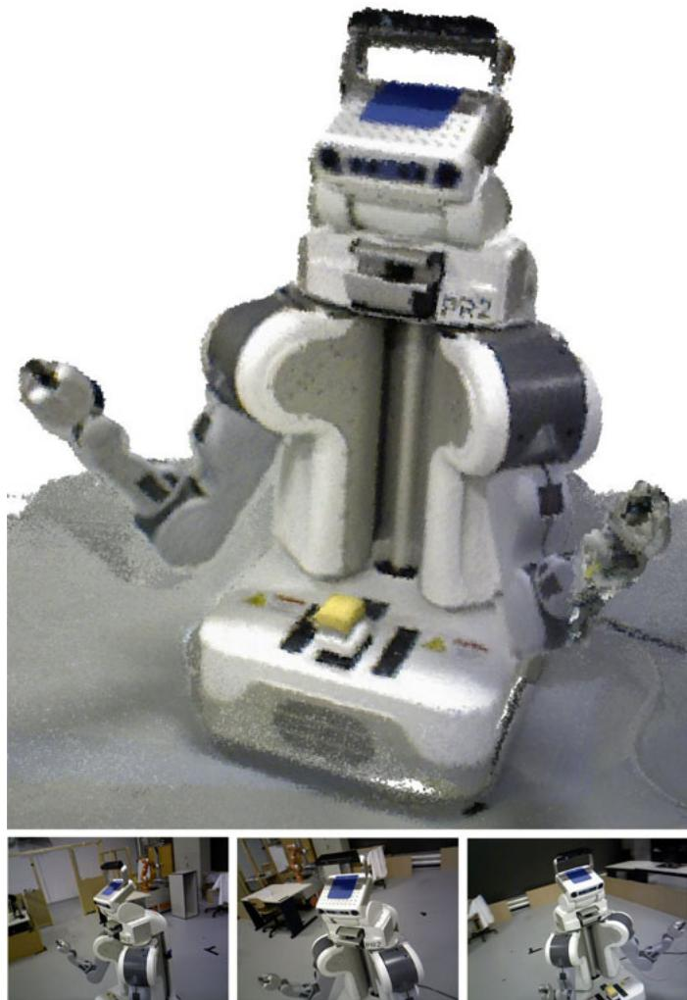
3-D Mapping With an RGB-D Camera
Felix Endres, Jurgen Hess, J¨ urgen Sturm, Daniel Cremers, and Wolfram Burgard¨
Abstract—In this paper, we present a novel mapping system that robustly generates highly accurate 3-D maps using an RGB-D camera. Our approach requires no further sensors or odometry. With the availability of low-cost and light-weight RGB-D sensors such as the Microsoft Kinect, our approach applies to small domestic robots such as vacuum cleaners, as well as flying robots such as quadrocopters. Furthermore, our system can also be used for free-hand reconstruction of detailed 3-D models. In addition to the system itself, we present a thorough experimental evaluation on a publicly available benchmark dataset. We analyze and discuss the influence of several parameters such as the choice of the feature descriptor, the number of visual features, and validation methods. The results of the experiments demonstrate that our system can robustly deal with challenging scenarios such as fast camera motions and feature-poor environments while being fast enough for online operation. Our system is fully available as open source and has already been widely adopted by the robotics community.
Index Terms—Localization, mapping, open source, RGB-D, simultaneous localization and mapping (SLAM).
I. INTRODUCTION
lems in the robotics community over the past decade. The availability of a map of the robot’s workspace is an important requirement for the autonomous execution of several tasks including localization, planning, and navigation. Especially for mobile robots that work in complex, dynamic environments, e.g., fulfilling transportation tasks on factory floors or in a hospital, it is important that they can quickly generate (and maintain) a 3-D map of their workspace using only onboard sensors.
Manipulation robots, for example, require a detailed model of their workspace for collision-free motion planning and aerial vehicles need detailed maps for localization and navigation. While previously many 3-D mapping approaches relied on expensive and heavy laser scanners, the commercial launch of RGB-D cameras based on structured light provided an attractive, powerful alternative.
Fig. 1. (Top) Occupancy voxel map of the PR2 robot. Voxel resolution is 5 mm. Occupied voxels are represented with color for easier viewing. (Bottom row) A sample of the RGB input images.
In this study, we describe one of the first RGB-D SLAM systems that took advantage of the dense color and depth images provided by RGB-D cameras. Compared with previous work, we introduce several extensions that aim at further increasing the robustness and accuracy. In particular, we propose the use of an environment measurement model (EMM) to validate the transformations estimated by feature correspondences and the iterative-closest-point (ICP) algorithm. In extensive experiments, we show that our RGB-D SLAM system allows us to accurately track the robot pose over long trajectories and under challenging circumstances. To allow other researchers to use our software, reproduce the results, and improve on them, we released the presented system under an open-source license. The code and detailed installation instructions are available online [1].
II. RELATED WORK
Wheeled robots often rely on 2-D laser range scanners, which commonly provide very accurate geometric measurements of the environment at high frequencies. To compute the relative motion between observations, most state-of-the-art SLAM (and also localization only) systems use variants of the ICP algorithm [2]–[4]. A variant particularly suited for man-made environments uses the point-to-line metric [5]. Recent approaches demonstrated that the robot pose can be estimated at millimeter accuracy [6] using two laser range scanners and ICP. Disadvantages of ICP include the dependence on a good initial guess to avoid getting stuck in a local minimum and the lack of a measure of the overall quality of the match. Approaches that use planar localization and a movable laser range scanner, e.g., on a mobile base with a pan-tilt unit or at the tip of a manipulator, allow for precise localization of a 2-D sensor in 3-D. In combination with an inertial measurement unit (IMU), this can also be used to create a map with a quadrocopter [7].
Visual SLAM approaches [8]–[10], also referred to as “structure and motion estimation” [11], [12], compute the robot’s motion and the map using cameras as sensors. Stereo cameras are commonly used to gain sparse distance information from the disparity in textured areas of the respective images. In contrast with laser-based SLAM, Visual SLAM systems typically extract sparse keypoints from the camera images. Visual feature points have the advantage of being more distinctive than typical geometric structures, which simplifies data association. Popular general purpose keypoint detectors and descriptors include SIFT [13], SURF [14], and ORB [15]. Descriptors can easily be combined with different keypoint detectors. In our experiments, we use the detector originally proposed for the descriptor. For SURF, the detection time strongly dominates the runtime, therefore, we further analyzed the descriptor in combination with the keypoint detector proposed by Shi and Tomasi [16], which is much faster (though at the price of lower repeatability) than the detector proposed in [14]. We compare the performance ofthe aforementioned descriptors in our SLAM system in Section IV-B.
Recently introduced RGB-D cameras such as the Microsoft Kinect or the Asus Xtion Pro Live offer a valuable alternative to laser scanners, as they provide dense, high-frequency depth information at a low price, size, and weight. The depth sensor projects structured light in the infrared spectrum, which is perceived by an infrared camera with a small baseline. As structured light sensors are sensitive to illumination, they are generally not applicable in direct sunlight. Time-of-flight cameras are less sensitive to sunlight but have lower resolutions, are more noisy, more difficult to calibrate, and much more expensive.
The first scientifically published RGB-D SLAM system was proposed by Henry et al. [17], who used visual features in combination with Generalized-ICP [18] to create and optimize a pose graph. Unfortunately neither the software nor the data used for evaluation have been made publicly available so that a direct comparison cannot be carried out.
KinectFusion [19] is an impressive approach for surface reconstruction based on a voxel grid that contains the truncated signed distance [20] to the surface. Each measurement is directly fused into the voxel representation. This reduces drift as compared with the frame-to-frame comparisons we employ, yet lacks the capability to recover from accumulating drift by loop closures. Real-time performance is achieved but requires highperformance graphics hardware. The size of the voxel grid has cubic influence on the memory usage so that KinectFusion only applies to small workspaces. Kintinuous [21] overcomes this limitation by virtually moving the voxel grid with the current camera pose. The parts that are shifted out of the reconstruction volume are triangulated. However, so far, the system cannot deal with loop closures, and therefore, may drift indefinitely. Our experiments show comparable quality in the trajectory estimation. Zeng et al. [22] show that the memory requirements of the voxel grid can be greatly reduced using an octree to store the distance values. Hu et al. [23] recently proposed a SLAM system that switches between bundle adjustment with and without available depth, which makes it more robust to lack of depth information, e.g., due to distance limitations and sunlight.
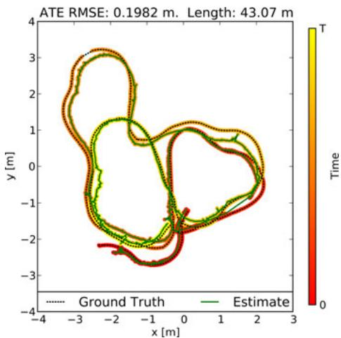
Fig. 2. Even under challenging conditions, a robot’s trajectory can be accurately reconstructed for long trajectories using our approach. The vertical deviations are within 20 cm. (Sequence shown: “fr2/pioneer slam.”)
Our system has been one of the first SLAM systems specifically designed for Kinect-style sensors. In contrast with other RGB-D SLAM systems, we extensively evaluated the overall system [24], [25] and freely provide an open-source implementation to stimulate scientific comparison and progress. While many of the discussed approaches bear the potential to perform well, they are difficult to compare, because the evaluation data are not available. Therefore, we advocate the use of publicly available benchmarks and developed the TUM RGB-D benchmark [26] that provides several sequences with varying difficulty. It contains synchronized ground truth data for the sensor trajectory of each sequence, which are captured with a highprecision motion capturing system. Each sequence consists of approximately 500 to 5000 RGB-D frames.
III. APPROACH
A. System Architecture Overview
In general, a graph-based SLAM system can be broken up into three modules [27], [28]: Frontend, backend, and final map representation. The frontend processes the sensor data to extract geometric relationships, e.g., between the robot and landmarks at different points in time. The frontend is specific to the sensor type used. Except for sensors that measure the motion itself as, e.g., wheel encoders or IMUs, the robot’s motion needs to be computed from a sequence of observations. Depending on the sensor type, there are different methods that can be applied to compute the motion in between two observations. In the case of an RGB-D camera, the input is an RGB image IRGB and a depth image . We determine landmarks by extracting a high-dimensional descriptor vector d from and storing them together with , their location relative to the observation pose
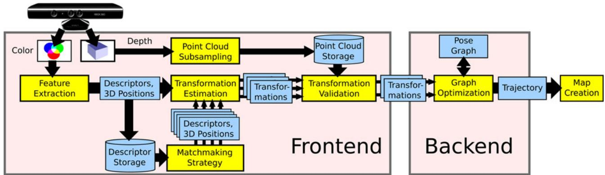
Fig. 3. Schematic overview of our approach. We extract visual features that we associate to 3-D points. Subsequently, we mutually register pairs of image frames and build a pose graph, that is optimized using . Finally, we generate a textured voxel occupancy map using the OctoMapping approach.
To deal with the inherent uncertainty introduced, , by sensor noise, the backend of the SLAM system constructs a graph that represents the geometric relations and their uncertainties. Optimization of this graph structure can be used to obtain a maximum likelihood solution for the represented robot trajectory. With the known trajectory, we can project the sensor data into a common coordinate frame. However, in most applications, a task-specific map representation is required, as using sensor data directly would be highly inefficient. We, therefore, create a 3-D probabilistic occupancy map from the RGB-D data, which can be efficiently used for navigation and manipulation tasks. A schematic representation of the presented system is shown in Fig. 3. The following sections describe the illustrated parts of the system.
B. Egomotion Estimation
The frontend of our SLAM system uses the sensor input in form of landmark positions to compute geometric relations that allow us to estimate the motion of the robot between state and . Visual features ease the data association for the landmarks by providing a measure for similarity. To match a pair of the keypoint descriptors , one computes their distance in the descriptor space. For SIFT and SURF, the proposed distance is Euclidean. However, Arandjelovic and Zisserman [29] proposed to use the Hellinger kernel ´ to compare SIFT features. They report substantial performance improvements for object recognition. We implemented both distance measures and briefly discuss the impact on accuracy in
Section IV-B. For ORB, the Hamming distance is used. By itself, however, the distance is not a criterion for association as the distance of matching descriptors can vary greatly. Because of the high dimensionality of the feature space, it is generally not feasible to learn a mapping for a rejection threshold. As proposed by Lowe, we resort to the ratio between the nearest neighbor and the second nearest neighbor in feature space. Under the assumption that a keypoint only matches to exactly one other keypoint in another image, the second nearest neighbor should be much further away. Thus, a threshold on the ratio between the distances of nearest and second nearest neighbor can be used effectively to control the ratio between false negatives and false positives. To be robust against false positive matches, we employ RANSAC [30] when estimating the transformation between two frames, which proves to be very effective against individual mismatches. We quickly initialize a transformation estimate from three feature correspondences. The transformation is verified by computing the inliers using a threshold θ based on the Mahalanobis distance between the corresponding features. For increased robustness in the case of largely missing depth values, we also include features without depth reading into the verification. Particularly, in case of few possible matches or many similar features, it is crucial to exploit the possible feature matches. We, therefore, threshold the matches at a permissive ratio. It has been highly beneficial to recursively reestimate the transformation with reducing threshold θ for the inlier determination, as proposed by Chum et al. [31]. Combined with a threshold for the minimum number of matching features for a valid estimate, this approach works well in many scenarios.
For larger man-made environments, the method is limited in its effectiveness, as these usually contain repetitive structures, , the same type of chair, window, or repetitive wallpapers. Given enough similar features through such identical instances, the corresponding feature matches between two images result in the estimation of a bogus transformation. The threshold on the minimum number of matches helps against random similarities and repetition of objects with few features, but our experiments show that setting the threshold high enough to exclude estimates from systematic misassociations comes with a performance penalty in scenarios without the mentioned ambiguities. The alternative validation method proposed in Section III-C is, therefore, a highly beneficial extension.
We use a least-squares estimation method [32] in each iteration of RANSAC to compute the motion estimate from the established 3-D point correspondences. To take the strongly anisotropic uncertainty of the measurements into account, the transformation estimates can be improved by minimizing the squared Mahalanobis distance instead of the squared Euclidean distance between the correspondences. This procedure has also been independently proposed by Henry et al. [17] in his most recent work and referred to as two-frame sparse bundle adjustment. We implemented this by applying (see Section III-E) after the motion estimation. We optimize a small graph that consists only of the two sensor poses and the previously determined inliers. However, in our experiments, this additional optimization step shows only a slight improvement of the overall trajectory estimates. We also investigated including the landmarks in the global graph optimization as it has been applied by other researchers. Contrary to our expectations, we could only achieve minor improvements. As the number of landmarks is much higher than the number of poses, the optimization runtime increases substantially.
C. Environment Measurement Model
Given a high percentage of inliers, the discussed methods for egomotion estimation can be assumed successful. However, a low percentage does not necessarily indicates an unsuccessful transformation estimate and could be a consequence of low overlap between the frames or few visual features, e.g., due to motion blur, occlusions, or lack of texture. Hence, both ICP and RANSAC using feature correspondences lack a reliable failure detection.
We, therefore, developed a method to verify a transformation estimate, independent of the estimation method used. Our method exploits the availability of structured dense depth data, in particular, the contained dense free-space information. We propose the use of a beam-based EMM. An EMM can be used to penalize pose estimates under which the sensor measurements are improbable given the physical properties of the sensing process. In our case, we employ a beam model, to penalize transformations for which observed points of one depth image should have been occluded by a point of the other depth image.
EMMs have been extensively researched in the context of 2-D Monte Carlo Localization and SLAM methods [33], where they are used to determine the likelihood of particles on the basis of the current observation. Beam-based models have been mostly used for 2-D range finders such as laser range scanners, where the range readings are evaluated using ray casting in the map. While this is typically done in a 2-D occupancy grid map, a recent adaptation of such a beam-based model for localization in 3-D voxel maps has been proposed by Oßwald et al. [34]. Unfortunately, the EMM cannot be trivially adapted for our purpose. First, due to the size of the input data, it is computationally expensive to compute even a partial 3-D voxel map in every time step. Second, since a beam model only provides a probability density for each beam [33], we still need to find a way to decide whether to accept the transformation based on the observation. The resulting probability density value obtained for each beam neither constitutes an absolute quality measure, nor does the product of the densities of the individual beams. The value for, e.g., a perfect match will differ, depending on the range value. In Monte Carlo methods, the probability density is used as a likelihood value that determines the particle weight. In the resampling step, this weight is used as a comparative measure of quality between the particles. This is not applicable in our context as we do not perform a comparison between several transformation candidates for one measurement.
We, thus, need to compute an absolute quality measure. We propose to use a procedure analogous to the statistical hypothesis testing. In our case, the null hypothesis being tested is the assumption that after applying the transformation estimate, spatially corresponding depth measurements stem from the same underlying surface location.
To compute the spatial correspondences for an alignment of two depth images and , we project the points of into to obtain the points (denoted without the prime). The image raster allows for a quick association to a corresponding depth reading . Since is given with respect to the sensor pose, it implicitly represents a beam, as it contains information about free space, i.e., the space between the origin and the measurement. Points that do not project into the image area of or onto a pixel without valid depth reading are ignored.
For the considered points, we model the measurement noise according to the equations for the covariances given by Khoshelham and Elberink [35], from which we construct the covariance matrix for each point . The sensor noise for the points in the second depth image is represented accordingly. To transform a covariance matrix of a point to the coordinate frame of the other sensor pose, we rotate it using R, which is the rotation matrix of the estimated transformation, i.e.,
The probability for the observation given an observation from a second frame can be computed as
Since the observations are independent given the true obstacle location z, we can rewrite the right-hand side to
Exploiting the symmetry of Gaussians, we can write
The product of the two normal distributions contained in the integral can be rewritten [36] so that we obtain
The first term in the integral in (6) is constant with respect to z, which allows us to move it out of the integral
Since we have no prior knowledge about , we assume it to be a uniform distribution. As it is constant, the value of , thus, becomes independent of z and we can move it out of the integral. We will see later that the posterior distribution remains a proper distribution, despite the choice of an improper prior [37]. The remaining integral only contains the normal distribution over z and, by the definition of a probability density function, reduces to one, leaving only
Informally speaking, having no prior knowledge about the true obstacle also means that we have no prior knowledge about the measurement. This can be shown by expanding the normalization factor
and using the same reasoning as earlier, we obtain
Combining (10) and (14), we get the final result
We can combine the aforementioned 3-D distributions of all data associations to a 3N-dimensional normal distribution, where N is the number of data associations. Assuming independent measurements yields
where is a column vector containing the N individual terms , and Σ contains the corresponding covariance matrices on the (block-) diagonal.
Note that the aforementioned formulation contains no additional term for short readings, as given in [33], since we expect a static environment during mapping and want to penalize this kind of range reading, as it is our main indication for misalignment. In contrast, range readings that are projected behind the corresponding depth value, are common, e.g., when looking behind an obstacle from a different perspective. “Occluded outliers,” the points projected far behind the associated beam (e.g., further than three standard deviations) are, therefore, ignored. However, we do want to use the positive information of “occluded inliers,” points projected closely behind the associated beam, which in practice confirm the transformation estimate. Care has to be taken when examining the statistical properties, as this effectively doubles the inliers. Fig. 4 illustrates the different cases of associated observations.
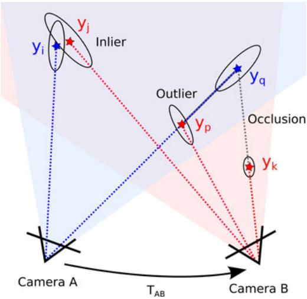
Fig. 4. Two cameras and their observations aligned by the estimated transformation . In the projection from camera to camera B, the data association of and is counted as an inlier. The projection of cannot be seen from camera B, as it is occluded by . We assume each point occludes an area of one pixel. Projecting the points observed from camera A to camera B, the association between and is counted as an inlier. In contrast, is counted as an outlier, as it falls in the free space between camera and observation . The last observation is outside of the field of view of camera A and is, therefore, ignored. Hence, the final result of the EMM is two inliers, one outlier, and one occluded.
A standard hypothesis test could then be used to reject a transformation estimate at a certain confidence level, by testing the p-value of the Mahalanobis distance for for a distribution (a chi-square distribution with 3N degrees of freedom). In practice, however, this test is very sensitive to small errors in the transformation estimate and is, therefore, hardly useful. Even under small misalignments, the outliers at depth jumps will be highly improbable under the given model and will lead to rejection. We, therefore, apply a measure that varies more smoothly with the error of the transformation.
Analogously to robust statistics such as the median and the median absolute deviation, we use the hypothesis test on the distributions of the individual observations (15) and compute the fraction of outliers as a criterion to reject a transformation. Assuming a perfect alignment and independent measurements, the fraction of inliers within, e.g., three standard deviations can be computed from the cumulative density function of the normal distribution. The fraction of inliers is independent of the absolute value of the outliers and, thus, smoothly degenerates for increasing errors in the transformation while retaining an intuitive statistical meaning. In our experiments (see Section IV-D), we show that applying a threshold on this fraction allows effective reduction of highly erroneous transformation estimates that would greatly diminish the overall quality of the map.
D. Visual Odometry and Loop-Closure Search
Applying an egomotion estimation procedure, such as the one described in Section III-B, between consecutive frames provides visual odometry information. However, the individual estimations are noisy, particularly in situations with few features or when most features are far away or even out of range.
Combining several motion estimates, additionally estimating the transformation to frames other than the direct predecessor substantially increases accuracy and reduces the drift. Successful transformation estimates to much earlier frames, i.e., loop closures, may drastically reduce the accumulating error. Naturally, this increases the computational expense linearly with the number of estimates. For multicore processors, this is mitigated to a certain degree, since the individual frame-to-frame estimates are independent and can, therefore, be parallelized. However, a comparison of a new frame to all predecessor frames is not feasible, and the possibility of estimating a valid transformation is strongly limited by the overlap of the field of view, the repeatability of the keypoint detector, and the robustness of the keypoint descriptor.
Therefore, we require a more efficient strategy to select candidate frames for which to estimate the transformation. Recognition of images in large sets of images has been investigated mostly in the context ofimage retrieval systems [38] but for large scale SLAM as well [39]. While these methods may be required for datasets spanning hundreds of kilometers, they require an offline training step to build efficient data structures. Because of the sensor limitations, we focus on indoor applications and proposed an efficient, straightforward-to-implement algorithm to suggest candidates for frame-to-frame matching [25]. We employ a strategy with three different types of candidates. First, we apply the egomotion estimation to n immediate predecessors. To efficiently reduce the drift, we second search for loop closures in the geodesic (graph-) neighborhood of the previous frame. We compute a minimal spanning tree of limited depth from the pose graph, with the sequential predecessor as the root node. We then remove the n immediate predecessors from the tree to avoid duplication and randomly draw k frames from the tree with a bias toward earlier frames. We, therefore, guide the search for potentially successful estimates by those previously found. In particular, when the robot revisits a place, once a loop closure is found, this procedure exploits the knowledge about the loop by preferring candidates near the loop closure in the sampling.
To find large loop closures, we randomly sample l frames from a set of designated keyframes. A frame is added to the set of keyframes, when it cannot be matched to the previous keyframe. This way, the number of frames for sampling is greatly reduced, while the field of view of the frames in between keyframes always overlaps with at least one keyframe.
Fig. 5 shows a comparison between a pose graph constructed without and with sampling of the geodesic neighborhood. The extension of found loop closures is clearly visible. The top graph has been created by matching n = 3 immediate predecessors and k = 6 randomly sampled keyframes. The bottom graph has been created with n = 2, k = 5, and l = 2 sampled frames from the geodesic neighborhood. Table I exemplary states the parameterization for a subset of our experiments. The choice of these parameters is crucial for the performance of the system. For short, feature-rich sequences low values can be set, as done for “fr1/desk.” For longer sequences, the values need to be increased.
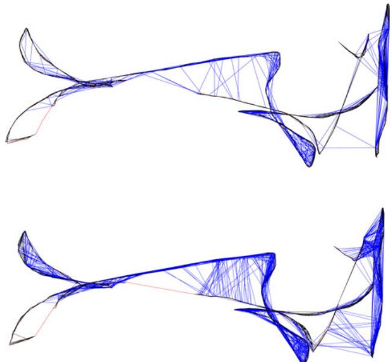
Fig. 5. Pose graph for the sequence “fr1/floor.” (Top) Transformation estimation to consecutive predecessors and randomly sampled frames. (Bottom) Additional exploitation of previously found matches using the geodesic neighborhood. In both runs, the same overall number of candidate frames for frameto-frame matching were processed. On the challenging “Robot SLAM” dataset, the average error is reduced by 26 %.
TABLE I
DETAILED RESULTS OBTAINED WITH THE PRESENTED SYSTEM
| Sequence | fr1desk | fr1room | fr2desk | fr2large no loop | MIT Stata2012-04-06 11:15 |
| ATE RMSE | 0.026 m | 0.087 m | 0.057 m | 0.86m | 1.65 m |
| ATE Median | 0.021 m | 0.087m | 0.053 m | 0.83 m | 1.53 m |
| ATE Max | 0.073 m | 0.16m | 0.099 m | 1.42 m | 3.90 m |
| Frames | 547 | 1324 | 2866 | 3256 | 19571 |
| Processing | 35.9s | 94.3 s | 390.3 s | 478.6s | 3881.7 s |
| FPS | 15.2Hz | 14.0Hz | 7.34Hz | 6.80Hz | 5.04 Hz |
| MatchingCandidates | 2/2/5(n/l/k) | 2/2/5(n/l/k) | 4/4/10(n/l/k) | 8/8/20(n/l/k) | 8/8/20(n/l/k) |
Except for "fr2/large no loop", our system achieves a better trajectory reconstruction than the respective best results stated in [21]. Our system also performs satisfactory on a 229-m long dataset of the recent MIT Stata dataset²
E. Graph Optimization
The pairwise transformation estimates between sensor poses, as computed by the SLAM frontend, form the edges of a pose graph. Because of estimation errors, the edges form no globally consistent trajectory. To compute a globally consistent trajectory, we optimize the pose graph using the o framework [40], which performs a minimization of a nonlinear error function that can be represented as a graph. More precisely, we minimize an error function of the form
to find the optimal trajectory . Here, is a vector of sensor poses. Furthermore, the terms and represent, respectively, the mean and the information matrix of a constraint relating the poses and i.e., the pairwise transformation computed by the frontend. Finally, is a vector error function that measures how well the poses and satisfy the constraint . It is 0 when and perfectly match the constraint, i.e., the difference of the poses exactly matches the estimated transformation.
Global optimization is especially beneficial in case of large loop closures, i.e., when revisiting known parts of the map, since the loop closing edges in the graph diminish the accumulated error. Unfortunately, large errors in the motion estimation step can impede the accuracy of large parts of the graph. This is primarily a problem in areas of systematic misassociation of features, , due to repeated occurrences of objects. For challenging data where several bogus transformations are found, the trajectory estimate obtained after graph optimization may be highly distorted. The validation method proposed in Section III-C, substantially, improves the rate of faulty transformation estimates. However, the validity of transformations cannot be guaranteed in every case. The residual error of the graph after optimization allows to determine inconsistencies in edges. We, therefore, use a threshold on the summands of (17) to prune edges with high error values after the initial convergence and continue the optimization. Fig. 10 shows the effectiveness of this approach, particularly, in combination with the EMM.
F. Map Representation
The system described so far computes a globally consistent trajectory. Using this trajectory, we can project the original point measurements into a common coordinate frame, thereby creating a point cloud representation of the world. Adding the sensor viewpoint to each point, a surfel map can be created. Such models, however, are highly redundant and require vast computational and memory resources; therefore, the point clouds are often subsampled, e.g., using a voxel grid.
To overcome the limitations of point cloud representations, we use 3-D occupancy grid maps to represent the environment. In our implementation, we use the octree-based mapping framework OctoMap [41]. The voxels are managed in an efficient tree structure that leads to a compact memory representation and inherently allows for map queries at multiple resolutions. The use of probabilistic occupancy estimation furthermore provides a means of coping with noisy measurements and errors in pose estimation. A crucial advantage, in contrast with a point-based representation, is the explicit representation of free space and unmapped areas, which is essential for collision avoidance and exploration tasks.
The memory efficient 2.5D representation in a depth image cannot be used to store a complete map. Using an explicit 3-D representation, each frame added to a point cloud map requires approximately 3.6 MB in memory. An unfiltered map constructed from the benchmark data used in our experiments would require between 2 and 5 GB. In contrast, the corresponding OctoMaps with a resolution of 2 cm ranges from only 4.2 to 25 MB. A further reduction to an average of few hundred kilobytes can be achieved if the maps are stored binary (i.e., only “free” versus “occupied”).
On the downside, the creation of an OctoMap requires more computational resources since every depth measurement is raycasted into the map. The time required per frame is highly dependent on the voxel size, as the number of traversed voxels per ray increases with the resolution.
Raycasting takes about one second per 100 000 points at a voxel size of 5-cm on a single core. At a 5-mm resolution, as in Fig. 1, raycasting a single RGB-D frame took about 25 s on the mentioned hardware. For online generation of a voxel map, we, therefore, need to lower the resolution and raycast only a subset of the cloud. In our experiments, using a resolution of 10 cm and a subsampling factor of 16 allowed for 30 Hz updates of the map and resulted in maps suitable for online navigation. Note, however, that a voxel map cannot be updated efficiently in case of major corrections of the past trajectory as obtained by large loop closures. In most applications, it is, therefore, reasonable to recreate the map in the case of such an event.
IV. EXPERIMENTAL EVALUATION
For a 3-D SLAM system that aims to be robust in real-world applications, there are many parameters and design choices that influence the overall performance. To determine the influence of each parameter on the overall performance of our system, we employ the RGB-D benchmark [26]. In the following, we first describe the benchmark datasets and error metric. Subsequently, we analyze the presented system by means of the quantitative results of our experiments. Note that the presented results were obtained offline, processing every recorded frame, which makes the qualitative results independent of the used hardware. However, the presented system has also been successfully used for online mapping. We used an Intel Core i7 CPU with 3.40 GHz and an nVidia GeForce GTX 570 graphics card for all experiments.
A. RGB-D Benchmark Datasets
The RGB-D benchmark provides an RGB-D dataset of several sequences captured with two Microsoft Kinect and one Asus Xtion Pro Live sensor. Synchronized ground truth data for the sensor trajectory, captured with a high precision motion capturing system, is available for all sequences. The benchmark also provides evaluation tools to compute several error metrics given an estimated trajectory. We use the root-mean-square of the absolute trajectory error (ATE) in our experiments which measures the deviation of the estimated trajectory to the ground truth trajectory. For a trajectory estimate and the corresponding ground truth X, it is defined as
i.e., the root-mean-square of the Euclidean distances between the corresponding ground truth and the estimated poses. To make the error metric independent of the coordinate system in which the trajectories are expressed, the trajectories are aligned such that the aforementioned error is minimal. The correspondences of poses are established using the timestamps.
The map error and the trajectory error of a specific dataset strongly depends on the given scene and the definition of the respective error functions. The error metric chosen in this study does not directly assess the quality of the map. However, it is reasonable to assume that the error in the map will be directly related to the error of the trajectory.
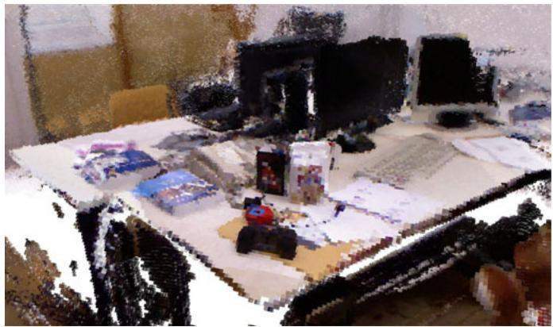
Fig. 6. Occupancy voxel representation of the sequence “fr1/desk” with 1 cm3 voxel size. Occupied voxels are represented with color for easier viewing.
The data sequences cover a wide range of challenges. The “fr1” set of sequences contains, for example, fast motions, motion blur, quickly changing lighting conditions, and short-term absence of salient visual features. Overall, however, the scenario is office-sized and rich on features. Fig. 6 shows a voxel map our system created for the “fr1/desk” sequence. To emphasize the robustness of our system, we further present an evaluation on the four sequences of the “Robot SLAM” category, where the Kinect was mounted on a Pioneer 3 robot. In addition to the aforementioned difficulties, these sequences combine many properties that are representative of highly challenging input. Recorded in an industrial hall, the floor contains few distinctive visual features. Because of the size of the hall and the comparatively short maximum range of the Kinect, the sequences contain stretches with hardly any visual features with depth measurements. Further, occurrence of repeated instances of objects of the same kind can easily lead to faulty associations. Some objects, like cables and tripods, have a very thin structure, such that they are only visible in the RGB image, yet do not occur in the depth image, resulting in features with wrong depth information. The repeatedly occurring poles have a spiral pattern that, similar to a barber’s pole, suggest a vertical motion when viewed from a different angle. The sequences also contain short periods of sensor outage. A desired property of the sequences is the possibility to find loop closures. Note that, even though the sequences contain wheel odometry and the motion is roughly restricted to a plane, we make no use of any additional information in the presented experiments. Further information about the dataset can be found on the benchmark’s web page.1 Fig. 2 shows a 2-D projection of the ground truth trajectory for the “fr2/pioneer_slam” sequence and a corresponding estimate of our approach, together with the computed ATE root mean squared error.
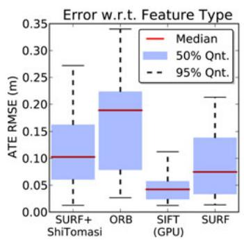
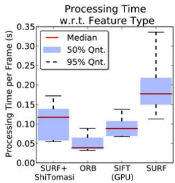
Fig. 7. Evaluation of (left) accuracy and (right) runtime with respect to feature type. The keypoint detectors and descriptors offer different tradeoffs between accuracy and processing times. Timings do not include graph optimization. The aforementioned results were computed on the nine sequences of the “fr1” dataset with four different parameterizations for each sequence.
Recently, RGB-D datasets captured at the MIT Stata center have been made available.2 Results obtained with our system for a 229-m-long sequence of this dataset are given in Table I.
B. Visual Features
One of the most influential choices for accuracy and runtime performance is the used feature detector and descriptor. We evaluated SIFT, SURF, ORB, and a combination of the Shi-Tomasi detector with SURF descriptors. We use the OpenCV implementations in our implementation, except for SIFT, where we employ a GPU-based implementation [42]. The plots in Fig. 7 show a performance comparison on the “fr1” dataset. The comparison results clearly show that each feature offers a tradeoff for a different use case. ORB and the combination of Shi–Tomasi and SURF may be good choices for robots with limited computational resources or for applications that require real-time performance (i.e., at the sensor rate of 30 Hz). With an average error of about 15 cm on the “fr1” dataset, the extraction speed of these options comes at the price of reduced accuracy and robustness, which makes them applicable only in benign scenarios or with additional sensing, e.g., odometry. In contrast, if a GPU is available, SIFT is clearly the best choice, as it provides the highest accuracy (median RMSE of 0.04 m). Fig. 8 shows the detailed results per sequence.
Another influential choice is the number of features extracted per Frame. For SIFT, increasing the number of features until about 600 to 700 improves the accuracy. No noticeable impact on accuracy was obtained when using more features.
In our experiments, we also evaluated the performance impact of matching SIFT and SURF descriptors with the Hellinger distance instead of the Euclidean distance, as recently proposed in the context of object recognition [29]. In our experiments, we could observe improved matching of features led to improvement of up to 25.8% for some datasets. However, for most sequences in the used dataset, the improvement was not significant, as the error is dominated by effects other than those from erroneous feature matching. As the change in distance measure neither increases the runtime nor the memory requirements noticeably, we suggest the adoption of the Hellinger distance.
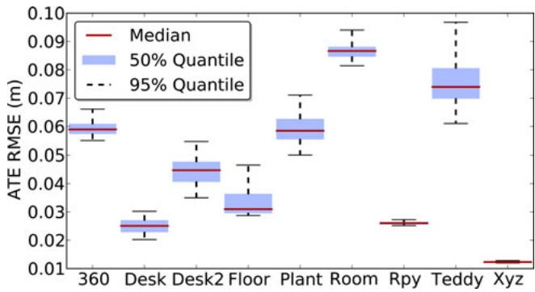
Fig. 8. Evaluation of the accuracy of the proposed system on the sequences of the “fr1” dataset using SIFT features. The plot has been generated from 288 evaluation runs using different parameter sets. The achieved frame rates are similar for all sequences. The median frame rate for the above experiments is 13.0 Hz, with a minimum of 9.1 Hz and a maximum of 16.4 Hz.
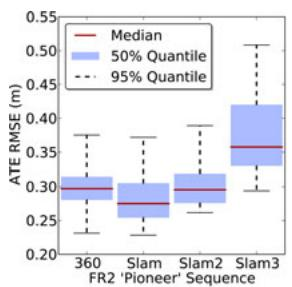
(a)
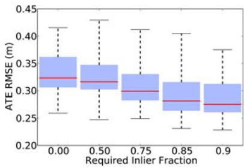
(b)
Fig. 9. (a) Evaluation of the accuracy of the presented system on the sequences of the “Robot SLAM” dataset. (b) Evaluation of the proposed EMM for the “Robot SLAM” scenarios of the RGB-D benchmark for various quality thresholds. The value 0.0 on the horizontal axis represents the case where no EMM has been used. The use of the EMM substantially reduces the error.
C. Graph Optimization
The graph optimization backend is a crucial part of our SLAM system. It significantly reduces the drift in the trajectory estimate. However, in some cases, graph optimization may also distort the trajectory. Common causes for this are wrong “loop closures” due to repeated structure in the scenario, or highly erroneous transformation estimates due to systematically wrong depth information, e.g., in case of thin structures. Increased robustness can be achieved by detecting transformations that are inconsistent to other estimates. We do this by pruning edges after optimization based on the Mahalanobis distance obtained from , which measures the discrepancy between the individual transformation estimates before and after optimization. Most recently similar approaches for discounting edges during optimization have been published [43], [44].
Fig. 10 shows an evaluation of edge pruning on the “fr2/slam” sequence, which contains several of the mentioned pitfalls. The boxes to the right show that the accuracy is drastically improved by pruning erroneous edges. As can be seen from the green boxes, the best performance is achieved using both rejection methods, the EMM in the SLAM frontend as well as the pruning of edges in the SLAM back end.
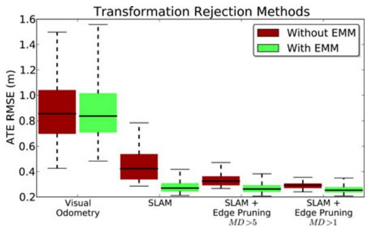
Fig. 10. In a challenging scenario (“Pioneer SLAM”), the application of the EMM leads to greatly improved SLAM results. Pruning of graph edges based on the statistical error also proves to be effective, particularly in combination with the EMM. The plot has been generated from 240 runs and shows the successive application of the named techniques. The runs represent various parameterizations for the required EMM inlier fraction [as in Fig. 9(b)], feature count (600–1200), and matching candidates (18–36).
Since the main computational cost of optimization lies in solving a system of linear equations, we investigated the effect of the used solver. provides three solvers, two of which are based on Cholesky decomposition (CHOLMOD, CSparse) and one implements preconditioned conjugate gradient (PCG). CHOLMOD and CSparse are less dependent on the initial guess, than PCG, both in terms of accuracy and computation time. In particular, the runtime of PCG drastically decreases given good initialization. In online operation, this is usually given by the previous optimization step, except when large loop closures cause major changes in the shape of the graph. Therefore, PCG is ideal for online operation. However, for offline optimization, the results from CHOLMOD and CSparse are more reliable. For the presented experiments, we optimize the pose graph offline using CSparse.
D. Environment Measurement Model
In this section, we describe the implementation of the EMM that is proposed in Section III-C and evaluate the increase in robustness.
Our system tries to estimate the transformation of captured RGB-D frames to a selection of previous frames. After computing such a transformation, we compute the number of inliers, outliers, and occluded points, by applying the three sigma rule to (15). As stated, points projected within a Mahalanobis distance of three are counted as inliers. Outliers are classified as occluded if they are projected behind the corresponding measurement.
The data association between projected point and beam is not symmetric. As shown in Fig. 4, a point projected outside of the image area of the other frame has no association, however, in the reversed process, it could occlude or be occluded by a projected point. We, therefore, evaluate both the projection of the points in the new image to the depth image of the older frame and vice versa. To reduce the requirements on runtime and memory, we subsample the depth image. In the presented experiments, we construct our point cloud using only every eighth row and column of the depth image, effectively reducing the cloud to be stored to a resolution of 80 by 60. This also decreases the statistical dependence between the measurements. In our experiments, the average runtime for the bidirectional EMM evaluation was 0.82 ms.
We compute the quality q of the point cloud alignment using the number of inliers I and the sum of inliers and outliers as . To avoid accepting transformations with nearly no overlap, we also require the inliers to be at least 25 % of the observed points, i.e., inliers, outliers, and occluded points.
To evaluate the effect of rejecting transformations with the EMM, we first ran the system repeatedly with eight minimum values for the quality q on the dataset. To avoid reporting results depending on a specific parameter setting, we show statistics over many trials with varied parameters settings. A q-threshold from 0.25 to 0.9 results in a minor improvement over the baseline (without EMM). The number of edges of the pose graph is only minimally reduced and the overall runtime increases slightly due to the additional computations. For thresholds above 0.95, the robustness decreases. While most trials remain unaffected, the system performs substantially worse in a number of trials.
Analogous to this finding, pruning edges based on the Mahalanobis distance in the graph does not improve the results for the “fr1” dataset. We conclude, from these experiments, that the error in the dataset does not stem from individual misalignments, for which alternative higher precision alignments are available. In this case, the EMM-based rejection will provide no substantial gain, as it can only filter the estimates.
In contrast, the same evaluation on the four sequences of the “Robot SLAM” category results in greatly increased accuracy and robustness. Because of the properties described in the previous section, the rejection of inaccurate estimates and wrong associations significantly reduces the error in the final trajectory estimates. As apparent in Fig. 9(b), the use of the EMM decreases the average error for thresholds on the quality measure up to 0.9.
V. CONCLUSION
In this paper, we presented a novel 3-D SLAM system for RGB-D sensors such as the Microsoft Kinect. Our approach extracts visual keypoints from the color images and uses the depth images to localize them in 3-D. We use RANSAC to estimate the transformations between associated keypoints and optimize the pose graph using nonlinear optimization. Finally, we generate a volumetric 3-D map of the environment that can be used for robot localization, navigation, and path planning.
To improve the reliability of the transformation estimates, we introduced a beam-based EEM that allows us to evaluate the quality of a frame-to-frame estimate. By rejecting highly inaccurate estimates based on this quality measure, our approach can robustly deal with highly challenging scenarios. We performed a detailed experimental evaluation of all components and parameters based on a publicly available RGB-D benchmark and characterized the expected error in different types of scenes. We furthermore provided detailed information about the properties of an RGB-D SLAM system that are critical for its performance. To allow other researchers to reproduce our results, to improve on them, and to build upon them, we have fully released all source code required to run and evaluate the RGB-D SLAM system as open source.
REFERENCES
[1] F. Endres, J. Hess, N. Engelhard, J. Sturm, D. Cremers, and W. Burgard. (2013, Jul.). [Online]. Available:http://ros.org/wiki/rgbdslam
[2] P. J. Besl and H. D. McKay, “A method for registration of 3-D shapes,” IEEE Trans. Pattern Anal. Mach. Intell., vol. 14, no. 2, pp. 239–256, Feb. 1992.
[3] S. Rusinkiewicz and M. Levoy, “Efficient variants of the ICP algorithm,” presented at the Int. Conf. 3-D Digital Imaging and Modeling, Quebec, Canada, 2001.
[4] A. W. Fitzgibbon, “Robust registration of 2D and 3D point sets,” Image Vision Comput., vol. 21, no. 13–14, pp. 1145–1153, 2003.
[5] A. Censi, “An ICP variant using a point-to-line metric,” in Proc. IEEE Int. Conf. Robot. Autom., Pasadena, CA, USA, May 2008, pp. 19–25.
[6] J. Roewekaemper, C. Sprunk, G. Tipaldi, C. Stachniss, P. Pfaff, and W. Burgard, “On the position accuracy of mobile robot localization based on particle filters combined with scan matching,” in Proc. IEEE/RSJ Int. Conf. Intell. Robots Syst., 2012, pp. 3158–3164.
[7] S. Grzonka, G. Grisetti, and W. Burgard, “A fully autonomous indoor quadrotor,” IEEE Trans. Robot., vol. 28, no. 1, pp. 90–100, Feb. 2012.
[8] A. Davison, “Real-time simultaneous localisation and mapping with a single camera,” in Proc. IEEE Intl. Conf. Comput. Vis., 2003, pp. 1403– 1410.
[9] G. Klein and D. Murray, “Parallel tracking and mapping for small AR workspaces,” in Proc. IEEE ACM Int. Symp. Mixed Augment. Reality, Nara, Japan, 2007, pp. 225–235.
[10] H. Strasdat, J. M. M. Montiel, and A. Davison, “Scale drift-aware large scale monocular slam,” presented at the Robotics: Sci. Syst. Conf., Zaragoza, Spain, 2010.
[11] H. Jin, P. Favaro, and S. Soatto, “Real-time 3-D motion and structure of point-features: A front-end for vision-based control and interaction,” in Proc. IEEE Int. Conf. Comput. Vis. Pattern Recog., 2000, pp. 778–779.
[12] D. Nister, “Preemptive RANSAC for live structure and motion estimation,” in Proc. IEEE Int. Conf. Comput. Vis., 2003, pp. 199–206.
[13] D. Lowe, “Distinctive image features from scale-invariant keypoints,” Int. J. Comput. Vis., vol. 60, no. 2, pp. 91–110, 2004.
[14] H. Bay, A. Ess, T. Tuytelaars, and L. Van Gool, “Speeded-up robust features (SURF),” Comput. Vis. Image Understanding, vol. 110, pp. 346– 359, 2008.
[15] E. Rublee, V. Rabaud, K. Konolige, and G. Bradski, “ORB: An efficient alternative to SIFT or SURF,” in Proc. IEEE Int. Conf. Comput. Vis., 2011, vol. 13, pp. 2564–2571.
[16] J. Shi and C. Tomasi, “Good features to track,” in Proc. IEEE Conf. Comput. Vis. Pattern Recognit., 1994, pp. 593–600.
[17] P. Henry, M. Krainin, E. Herbst, X. Ren, and D. Fox, “RGB-D mapping: Using kinect-style depth cameras for dense 3D modeling of indoor environments,” Int. J. Robot. Res., vol. 31, no. 5, pp. 647–663, Apr. 2012.
[18] A. Segal, D. Haehnel, and S. Thrun, “Generalized-ICP,” presented at the Robotics.: Sci. Syst. Conf., Seattle, WA, USA, 2009.
[19] R. A. Newcombe, S. Izadi, O. Hilliges, D. Molyneaux, D. Kim, A. J. Davison, P. Kohli, J. Shotton, S. Hodges, and A. W. Fitzgibbon, “Kinectfusion: Real-time dense surface mapping and tracking,” in Proc. IEEE Int. Symp. Mixed Augmented Reality, 2011, pp. 127–136.
[20] B. Curless and M. Levoy, “A volumetric method for building complex models from range images,” in Proc. Special Interest Group Graph. Interactive Techn., 1996, pp. 303–312.
[21] T. Whelan, H. Johannsson, M. Kaess, J. Leonard, and J. McDonald, “Robust real-time visual odometry for dense RGB-D mapping,” presented at the IEEE Int. Conf. Robotics Automation, Karlsruhe, Germany, May 2013.
[22] M. Zeng, F. Zhao, J. Zheng, and X. Liu, “Octree-based fusion for realtime 3D reconstruction,” Graph. Models, vol. 75, 2012.
[23] G. Hu, S. Huang, L. Zhao, A. Alempijevic, and G. Dissanayake, “A robust RGB-D SLAM algorithm,” in Proc. IEEE/RSJ Int. Conf. Intell. Robots Syst.), 2012, pp. 1714–1719.
[24] F. Endres, J. Hess, N. Engelhard, J. Sturm, D. Cremers, and W. Burgard, “An evaluation of the RGB-D SLAM system,” in Proc. IEEE Int. Conf. Robot. Autom., St. Paul, MN, USA, 2012, pp. 1691–1696.
[25] F. Endres, J. Hess, N. Engelhard, J. Sturm, and W. Burgard, “6D visual SLAM for RGB-D sensors,” Automatisierungstechnik, vol. 60, pp. 270– 278, May 2012.
[26] J. Sturm, N. Engelhard, F. Endres, W. Burgard, and D. Cremers, “A benchmark for the evaluation of RGB-D slam systems,” in Proc. Int. Conf. Intell. Robot Syst., 2012, pp. 573–580.
[27] H. Durrant-Whyte and T. Bailey, “Simultaneous localization and mapping: Part I,” IEEE Robot. Autom. Mag., vol. 13, no. 2, pp. 99–110, Jun. 2006.
[28] T. Bailey and H. Durrant-Whyte, “Simultaneous localization and mapping (SLAM): Part II,” IEEE Robot. Autom. Mag., vol. 13, no. 3, pp. 108–117, Sep. 2006.
[29] R. Arandjelovic and A. Zisserman, “Three things everyone should know ´ to improve object retrieval,” in Proc. IEEE Conf. Comput. Vis. Pattern Recog., 2012, pp. 2911–2918.
[30] M. Fischler and R. Bolles, “Random sample consensus: a paradigm for model fitting with applications to image analysis and automated cartography,” Commun. ACM, vol. 24, no. 6, pp. 381–395, 1981.
[31] O. Chum, J. Matas, and J. Kittler, “Locally optimized ransac,” in Pattern Recognition. New York, NY, USA: Springer-Verlag, 2003, pp. 236–243.
[32] S. Umeyama, “Least-squares estimation of transformation parameters between two point patterns,” IEEE Trans. Pattern Anal. Mach. Intell., vol. 13, no. 4, pp. 376–380, Apr. 1991.
[33] S. Thrun, W. Burgard, and D. Fox, Probabilistic Robotics. New York, NY, USA: MIT Press, 2005.
[34] S. Oßwald, A. Hornung, and M. Bennewitz, “Improved proposals for highly accurate localization using range and vision data,” in Proc. IEEE/RSJ Int. Conf. Intell. Robots Syst., Vilamoura, Portugal, Oct. 2012, pp. 1809–1814.
[35] K. Khoshelham and S. O. Elberink, “Accuracy and resolution of kinect depth data for indoor mapping applications,” Sensors, vol. 12, no. 2, pp. 1437–1454, 2012.
[36] K. B. Petersen and M. S. Pedersen, “The Matrix Cookbook,” Oct. 2008. Available: http://www2.imm.dtu.dk/pubdb/p.php?3274
[37] C. Bishop, Pattern Recognition and Machine Learning. New York, NY, USA: Springer-Verlag, 2006.
[38] D. Nister and H. Stewenius, “Scalable recognition with a vocabulary tree,” in Proc. IEEE Comput. Soc. Conf. Comput. Vis. Pattern Recog., vol. 2, Washington, DC, USA, 2006, pp. 2161–2168.
[39] M. Cummins and P. Newman, “Appearance-only SLAM at large scale with FAB-MAP 2.0,” Int. J. Robot. Res., vol. 30, pp. 1100–1123, 2010.
[40] R. Kummerle, G. Grisetti, H. Strasdat, K. Konolige, and W. Burgard, ¨ “G2o: A general framework for graph optimization,” in Proc. IEEE Int. Conf. Robot. Autom., Shanghai, China, 2011, pp. 3607–3613.
[41] A. Hornung, K. M. Wurm, M. Bennewitz, C. Stachniss, and W. Burgard, “OctoMap: An efficient probabilistic 3D mapping framework based on octrees,” Auton. Robots, pp. 189–206, 2013.
[42] C. Wu. (2007). SiftGPU: A GPU implementation of scale invariant feature transform (SIFT). [Online]. Available:http://cs.unc.edu/ccwu/siftgpu
[43] P. Agarwal, G. D. Tipaldi, L. Spinello, C. Stachniss, and W. Burgard, “Robust map optimization using dynamic covariance scaling,” in Proc. IEEE Int. Conf. Robot. Autom., May 2013.
[44] E. Olson and P. Agarwal, “Inference on networks of mixtures for robust robot mapping,” Int. J. Robot. Res., vol. 32, no. 7, pp. 826–840, Jun. 2013.
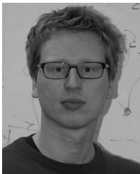
Felix Endres received the Master degree in applied computer science from the University of Freiburg, Freiburg Germany, where, since 2009, he has been working toward the Ph.D. degree with the Autonomous Intelligent Systems Lab headed by W. Burgard.
His research interests include 3-D perception, simultaneous localization and mapping systems, and learning of manipulation skills by interaction.
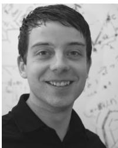
Jurgen Hess¨ received the Master degree in computer science from the University of Freiburg, Freiburg, Germany, in 2008, where he is currently working toward the Ph.D. degree with the Autonomous Intelligent Systems Lab headed by W. Burgard.
His research interests include robot manipulation, surface coverage, and 3-D perception.
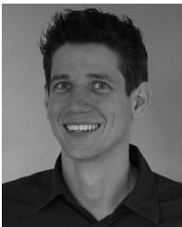
Jurgen Sturm¨ received the Ph.D. degree from the Autonomous Intelligent Systems Lab headed by Prof. W. Burgard, University of Freiburg, Freiburg, Germany. While working toward the Ph.D. degree, he developed a novel approaches to estimate kinematic models of articulated objects and mobile manipulators, as well as for tactile sensing and imitation learning.
He is a Postdoctoral Researcher with the Computer Vision and Pattern Recognition group of Prof. D. Cremers, the Department of Computer Science,
Technical University of Munich, Munich, Germany. His major research interests include dense localization and mapping, 3-D reconstruction, and visual navigation for autonomous quadrocopters.
Dr. Sturm received the European Coordinating Committee for Artificial Intelligence (ECCAI) Artificial Intelligence Dissertation Award 2011 for his Ph.D. thesis and was shortlisted for the European Robotics Research Network (EURON) Georges Giralt Award 2012.
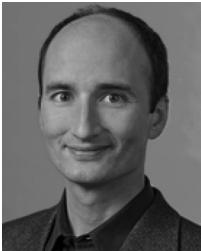
Daniel Cremers received the Bachelor degree in mathematics and physics and the Master degree in theoretical physics from the University of Heidelberg, Heidelberg, Germany, in 1994 and 1997, respectively, and the Ph.D. degree in computer science from the University of Mannheim, Mannheim, Germany, in 2002.
Subsequently, he spent two years as a Postdoctoral Researcher with the University of California at Los Angeles (UCLA), Los Angeles, CA, USA, and one year as a Permanent Researcher with Siemens Corporate Research, Princeton, NJ, USA. From 2005 to 2009, he was an Associate Professor with the University of Bonn, Bonn, Germany. Since 2009, he has been the Chair with Computer Vision and Pattern Recognition, Technical University of Munich, Munich, Germany.
Dr. Cremers has received several awards for his publications, including the award of Best Paper of the Year 2003 from the International Pattern Recognition Society and the 2005 UCLA Chancellor’s Award for Postdoctoral Research. In December 2010, the magazine Capital listed him among “Germany’s Top 40 Researchers Below 40.”
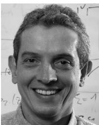
Wolfram Burgard received the Ph.D. degree in computer science from the University of Bonn, Bonn, Germany, in 1991
He is currently a Professor of computer science with the University of Freiburg, Freiburg, Germany, where he heads the Laboratory for Autonomous Intelligent Systems. His areas of interests include artificial intelligence and mobile robots. In the past, he and his group developed several innovative probabilistic techniques for robot navigation and control. They cover different aspects such as localization, map-
building, path-planning, and exploration.
Dr. Burgard has received several best paper awards from outstanding national and international conferences for his work. In 2009, he received the Gottfried Wilhelm Leibniz Prize; the most prestigious German research award. In 2010, he received the Advanced Grant of the European Research Council. He is the Spokesperson of the Research Training Group Embedded Microsystems and the Cluster of Excellence BrainLinks-BrainTools.
md/2014_3-D_Mapping_With_an_RGB-D_Camera.md 预渲染生成（OCR 语料，插图取自原文）。
公式以 MathML 呈现，浏览器原生渲染，不依赖外部脚本或字体 CDN。